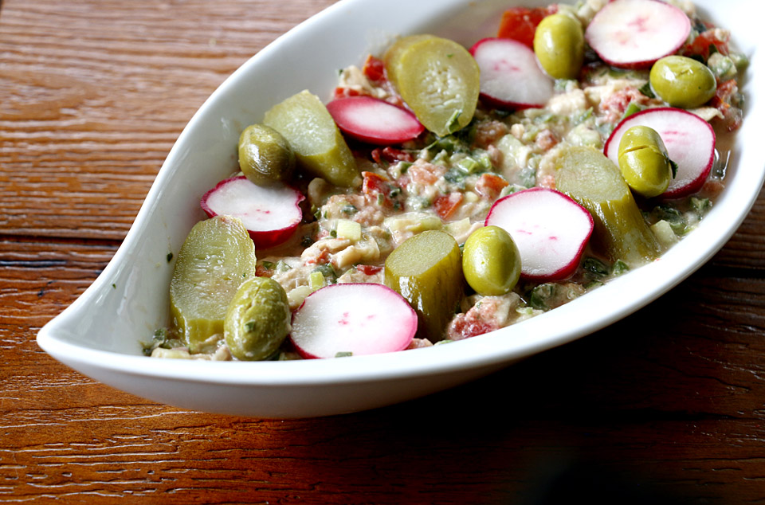

Palestinian Sailor's Salad
Preparation:
Break apart the toasted bread. Chop chili peppers, removing some of the membranes and seeds. In a mortar
and pestle, pound the peppers along with the salt until soft. Add the basil and muddle to extract
flavor. Add the green onions and crush well, followed by the cucumbers. Finally, stir in the tomatoes
and mash up. Mix the entire salad to incorporate all ingredients. In a separate bowl, whisk the tahini
with the lemon juice until emulsified. Right before serving, mix the tahini sauce and bread pieces into
the salad. Transfer to a serving dish and flatten the top. Drizzle the surface generously with a good
quality olive oil. Garnish with pitted green olives, pickled peppers, and radish slices.